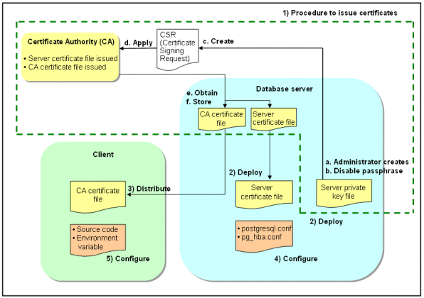

To encrypt communication data transferred between a client and a server, configure communication data encryption as described below.
Communication data encryption not only protects the communication content, but it also guards against man-in-the-middle (MITM) attacks (for example, data and password theft through server impersonation).
Configuration procedure |
|---|
1) Issue a certificate |
2) Deploy a server certificate file and a server private key file |
3) Distribute a CA certificate file to the client |
4) Configure the operating environment for the database server |
5) Configure the operating environment for the client |
The following figure illustrates the environment for communication data encryption.
Figure 4.1 Environment for communication data encryption
